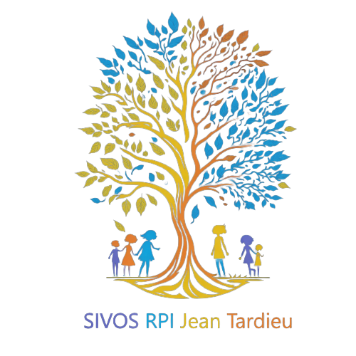

Stage 1ère année BTS SIO |
|
|---|---|
|
J'ai effectué un Stage au SIVOS RPI Jean Tardieu pour ma premère
années de BTS SIO Le but de ce stage étais de créer un site internet pour le Syndicat intercommunal à vocation scolaire Jean Tardieu afin de leur offrir une meilleur visibilité dans la région Pour plus d'information voici mon Rapport de stage |
 |
Stage 2e année BTS SIO |
|
|---|---|
|  |
J'ai effectué un Stage à Nevers Agglomération pour ma seconde année de
BTS SIO Le but de ce stage était de créer une application web avec le framwork Symfony au format mobile first. Le besoin de cette application est dû au problème suivant, il est impossible d'utiliser les logiciels OSTickets et GLPI depuis un téléphone portable. J'ai donc créé cette application afin de pouvoir utiliser ces logiceils depuis n'import quel lieu d'intervention. Pour plus d'information voici mon Rapport de stage |
Projet GSB Compte rendu |
|
|---|---|
| J'ai effectué un projet en PHP nommé GSB Compte rendu. Cette application est une application au format MVC (Modèle Vue Contrôleur) et permet à l'utilisateur d'effectuer une gestion de comptes rendus. |
|
Projet ICGO application élève |
|
|---|---|
|
|
J'ai effectué un projet en C# nommé ICGO application élève. Cette
application comprend la gestion d'agences, le recrutement des
formateurs, l'élaboration du catalogue des formations et
l'inscriptions de stagiaires. Cette application est une application au format MVC (Modèle Vue Contrôleur). |